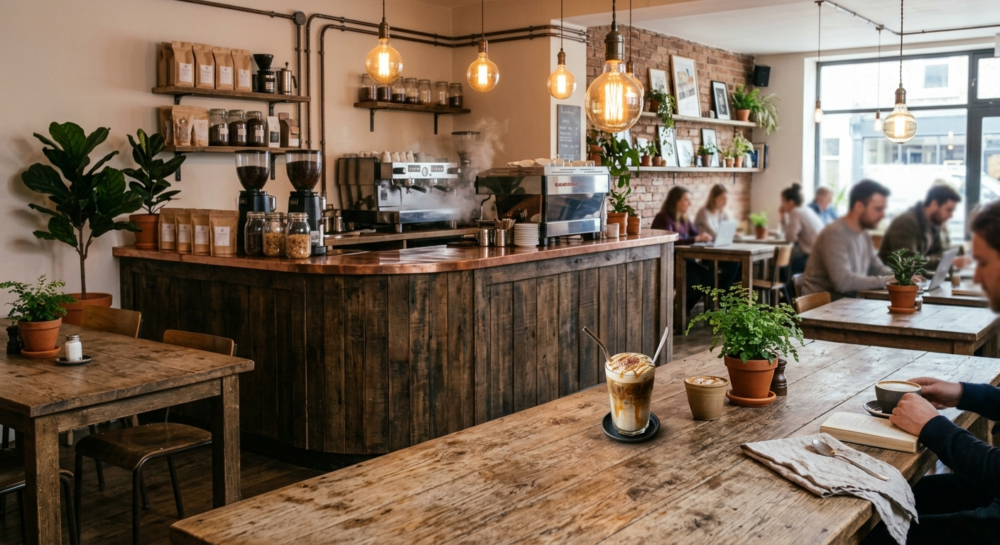
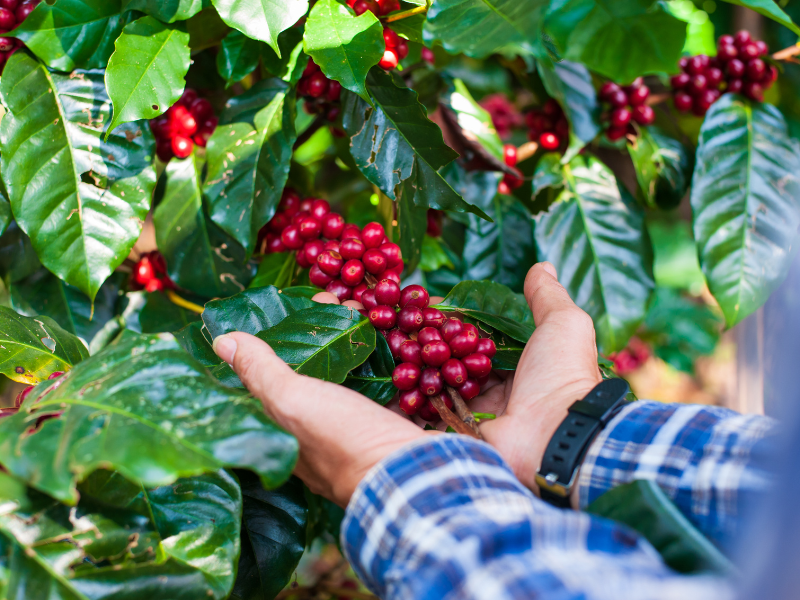
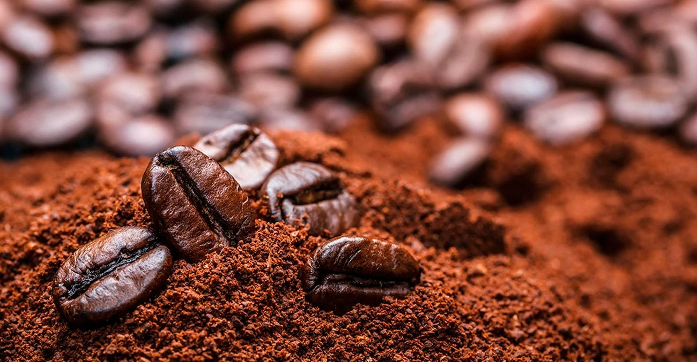
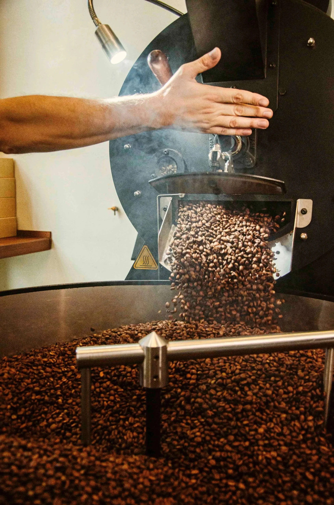
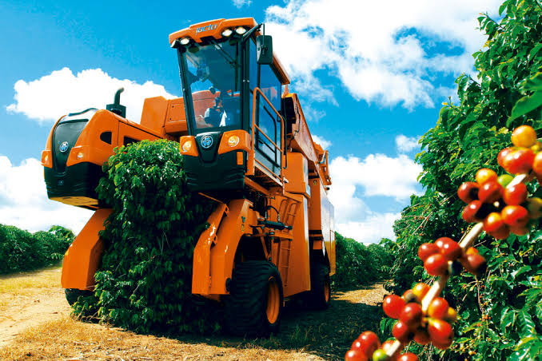

Nossa história
Como um simples café virou o Café de Cria

O Café de Cria nasceu de uma ideia simples: transformar o ato de tomar café em uma experiência de verdade. Mais do que uma bebida para acordar, o café sempre foi, para quem criou esse espaço, um motivo para parar, respirar e curtir o momento — sozinho ou acompanhado.
O nome “Café de Cria” veio dessa vontade de criar algo genuíno, com identidade e conexão com a cidade. “Cria” representa origem, pertencimento e autenticidade — valores que guiam cada detalhe do espaço, do atendimento ao capricho em cada xícara servida.
Desde o início, o objetivo sempre foi claro: oferecer um café de qualidade em um ambiente acolhedor, onde as pessoas se sintam à vontade para conversar, estudar, trabalhar ou simplesmente aproveitar um momento de pausa. Cada grão é escolhido com cuidado, e cada detalhe do espaço é pensado para que você se sinta em casa.
Hoje, o Café de Cria segue crescendo com o mesmo espírito do primeiro dia: qualidade no que é servido e um ambiente que combina com a vibe de quem passa por aqui.
A história do café
Uma pequena linha do tempo de como o café conquistou o mundo

1. Origem do café
Acredita-se que o café tenha surgido na Etiópia, onde a planta crescia naturalmente nas montanhas e já era conhecida havia séculos.

2. Descoberta e primeiras utilizações
Os primeiros registros de consumo do café vêm da Península Arábica, onde os grãos passaram a ser torrados e preparados como bebida.

3. Expansão pelo mundo
Com o tempo, o café se espalhou pelo Oriente Médio, chegou à Europa e conquistou espaço em diversas culturas ao redor do mundo.
4. Chegada ao Brasil
O café chegou ao Brasil ainda no período colonial e encontrou no clima e no solo brasileiros condições ideais para se desenvolver.

5. O Brasil como grande produtor
Ao longo dos séculos, o Brasil se tornou um dos maiores produtores de café do mundo, movimentando a economia e a cultura do país.

6. Parte da cultura brasileira
Hoje, o café faz parte do dia a dia dos brasileiros — presente nas casas, nos encontros e, claro, em espaços como o Café de Cria.